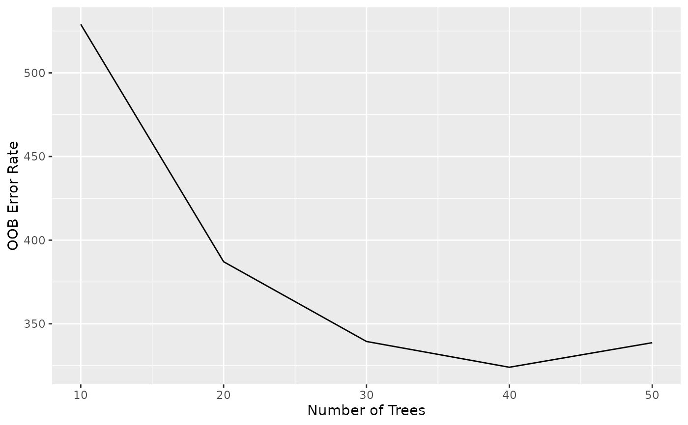
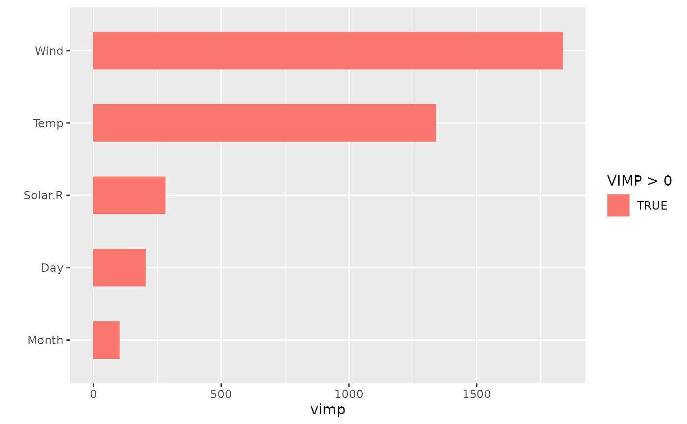

These methods let you use ggplot2::autoplot() on any gg_*
object returned by ggRandomForests. They are thin wrappers around
the corresponding plot.gg_*() S3 methods, so all arguments
accepted by those methods are forwarded via ....
Usage
# S3 method for class 'gg_error'
autoplot(object, ...)
# S3 method for class 'gg_vimp'
autoplot(object, ...)
# S3 method for class 'gg_rfsrc'
autoplot(object, ...)
# S3 method for class 'gg_variable'
autoplot(object, ...)
# S3 method for class 'gg_partial'
autoplot(object, ...)
# S3 method for class 'gg_partial_rfsrc'
autoplot(object, ...)
# S3 method for class 'gg_partialpro'
autoplot(object, ...)
# S3 method for class 'gg_roc'
autoplot(object, ...)
# S3 method for class 'gg_survival'
autoplot(object, ...)
# S3 method for class 'gg_brier'
autoplot(object, ...)Details
The following gg_* classes are supported:
gg_errorOOB error vs. number of trees
gg_vimpVariable importance ranking
gg_rfsrcPredicted vs. observed values
gg_variableMarginal dependence
gg_partialPartial dependence (via
plot.variable)gg_partial_rfsrcPartial dependence (via
partial.rfsrc)gg_partialproPartial dependence (via
varPro)gg_rocROC curve
gg_survivalSurvival / cumulative hazard curves
gg_brierTime-resolved Brier score and CRPS
Examples
# \donttest{
library(ggplot2)
#>
#> Attaching package: ‘ggplot2’
#> The following object is masked from ‘package:randomForest’:
#>
#> margin
set.seed(42)
rf <- randomForestSRC::rfsrc(Ozone ~ ., data = na.omit(airquality),
ntree = 50, importance = TRUE,
tree.err = TRUE)
autoplot(gg_error(rf))
#> Ignoring unknown labels:
#> • colour : "Outcome"

autoplot(gg_vimp(rf))

# }